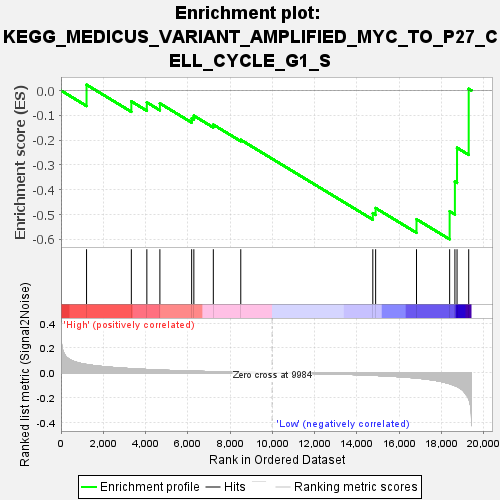
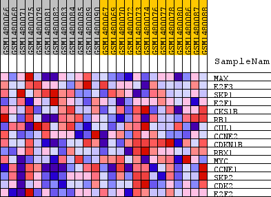
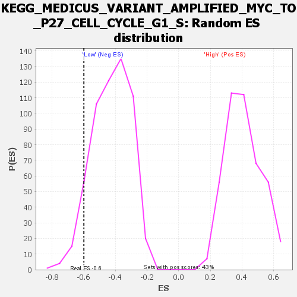

| Dataset | WG6v3.CPT1A.cls#High_versus_Low.CPT1A.cls#High_versus_Low_repos |
| Phenotype | CPT1A.cls#High_versus_Low_repos |
| Upregulated in class | Low |
| GeneSet | KEGG_MEDICUS_VARIANT_AMPLIFIED_MYC_TO_P27_CELL_CYCLE_G1_S |
| Enrichment Score (ES) | -0.5999289 |
| Normalized Enrichment Score (NES) | -1.4113699 |
| Nominal p-value | 0.06666667 |
| FDR q-value | 0.6107715 |
| FWER p-Value | 1.0 |

| SYMBOL | TITLE | RANK IN GENE LIST | RANK METRIC SCORE | RUNNING ES | CORE ENRICHMENT | |
|---|---|---|---|---|---|---|
| 1 | MAX | MAX | 1209 | 0.067 | 0.0234 | No |
| 2 | E2F3 | E2F3 | 3328 | 0.033 | -0.0438 | No |
| 3 | SKP1 | SKP1 | 4062 | 0.026 | -0.0478 | No |
| 4 | E2F1 | E2F1 | 4679 | 0.022 | -0.0518 | No |
| 5 | CKS1B | CKS1B | 6182 | 0.013 | -0.1124 | No |
| 6 | RB1 | RB1 | 6286 | 0.012 | -0.1016 | No |
| 7 | CUL1 | CUL1 | 7207 | 0.009 | -0.1377 | No |
| 8 | CCNE2 | CCNE2 | 8506 | 0.005 | -0.1988 | No |
| 9 | CDKN1B | CDKN1B | 14754 | -0.020 | -0.4947 | No |
| 10 | RBX1 | RBX1 | 14887 | -0.021 | -0.4741 | No |
| 11 | MYC | MYC | 16821 | -0.042 | -0.5192 | Yes |
| 12 | CCNE1 | CCNE1 | 18389 | -0.088 | -0.4870 | Yes |
| 13 | SKP2 | SKP2 | 18638 | -0.103 | -0.3674 | Yes |
| 14 | CDK2 | CDK2 | 18739 | -0.110 | -0.2310 | Yes |
| 15 | E2F2 | E2F2 | 19291 | -0.207 | 0.0067 | Yes |

